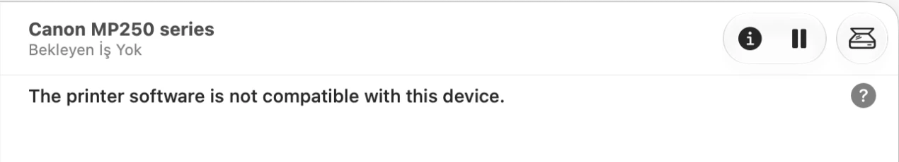

Printer not working on your Mac after the macOS update?
Your printer isn't broken, and you don't need a new one. A free driver gets 3,670 Canon, Epson, HP, Brother and Samsung printers working again.
Free · Signed and notarized by Apple · Any Apple Silicon Mac, macOS 12 or later
7,600+ downloads · 65 stars on GitHub · No account needed
How it works
- Plug the printer in with USB and switch it on
- Open the downloaded file and click through
- Print. The printer is set up for you
Still not printing? Restart the Mac once and re-plug the printer, then see Help.
New: print from your iPhone and iPad
Adds AirPrint to your printer, even over USB. Free, with nothing to install on your iPhone.
See how it works →Is my printer supported?
Not listed? Try just the model number. If it still isn't there, this driver doesn't support that printer. And if macOS already sets your printer up by itself (AirPrint), you don't need any of this.
Canon Epson HP Brother Samsung Lexmark Xerox Kyocera Ricoh Oki Dell Sharp Kodak Sony Fujifilm Panasonic all brands →
Does this look familiar?

Your options
| Option | Cost | Works on macOS 28? | Older inkjets like Canon PIXMA? |
|---|---|---|---|
| This package | Free | Yes, native on Apple Silicon | Yes, among 3,670 models |
| Reinstall Rosetta | Free | No, Apple ends Rosetta for apps in macOS 28 | Only some printers, and only until then |
| The maker's driver | Free | Only if the maker built one for Apple Silicon | Older models usually have none |
| A paid replacement driver | Paid, can be per printer | Check with the vendor | Often not: many only drive PCL or PostScript printers |
| A new printer | The price of a printer | Yes | Yes, and your old one goes to waste |
What this driver doesn't do: it can't show ink or toner levels, it doesn't scan, and Wi-Fi printers take one extra step.
Popular printers
Brother HL-2270DW series Brother HL-1210W series Brother HL-1110 series Brother MFC-7460DN Brother DCP-7065DN Canon PIXMA MP250 Canon PIXMA iP4300 Canon PIXMA iP110 Canon PIXMA MX885 Canon MG2500 series Epson Stylus Photo R300 Epson WorkForce 610 HP LaserJet 1010 Samsung ML-1865 Samsung ML-2010
Questions
Why did my printer stop working?
The printer maker's Mac driver was built for older Intel Macs and never updated. macOS 27 marks those drivers as incompatible, so the printer stops, even though nothing is wrong with it. This free driver replaces the old one.
Will reinstalling Rosetta fix it?
Sometimes, and only for now. Reinstalling Rosetta makes some old printer drivers work again after you delete and re-add the printer; others stay marked “Software Incompatible”. Apple ends Rosetta for apps in macOS 28, so the maker's old driver will stop again then. This driver doesn't need Rosetta.
I had the printer maker's old driver installed. Anything to do?
Restart the Mac once after installing, then unplug and re-plug the printer. The installer moves Canon's old driver aside, nothing is deleted.
Still on macOS 26 Tahoe or earlier?
Your printer works now, but it can stop after you update. You can install this before or after updating.
My printer is on Wi-Fi, not USB.
Install the driver, then open System Settings → Printers & Scanners, click Add, select your printer, choose Use: Select Software… and pick your model ending in “Apple Silicon”.
The installer didn't add my printer.
Install the driver, then open System Settings → Printers & Scanners, click Add, select your printer, choose Use: Select Software… and pick your model ending in “Apple Silicon”.
Where are print quality and black & white?
In the print dialog, open Printer Features (Printer Options on macOS 27). Quality is under Resolution. For black & white set Color Model to Grayscale.
Black doesn't print, or colors look off.
Run a nozzle check from the printer itself first: an empty or clogged cartridge is the usual cause. Then check in Printer Features that no “color-only” mode is selected. Colors can look a little different from the maker's driver.
Supply Levels says “Information Not Available”.
That's expected: this driver can't read ink or toner levels. Check them on the printer's own screen.
My printer isn't in the list.
Many newer printers support AirPrint and need no driver: connect the printer to your network, then add it in System Settings → Printers & Scanners → Add, with Use: AirPrint. AirPrint doesn't work over USB.
My Brother ink tank printer (DCP-T420W, DCP-T426W, DCP-T536DW, MFC-T…) isn't supported.
These printers have no free driver, so this package can't add them. Check your model's Downloads page on support.brother.com. If the printer supports AirPrint, connect it to your network and add it with Use: AirPrint.
My HP LaserJet 1018, 1020, P1005 or P1006 isn't supported.
These printers need HP's own software loaded every time they switch on, which this driver can't do. Picking a similar model doesn't work either: the job goes through, but nothing prints.
Does the scanner on my all-in-one work?
No, only printing. For scanning use VueScan (paid) or SANE (free, more technical).
Can I print from my iPhone or iPad?
Yes. Open Print from iPhone & iPad on your Mac and turn your printer on. Your Mac adds AirPrint for it, even over USB, as long as the Mac stays on.
Is it safe? Will macOS complain?
Yes, it's safe. The installer is signed and notarized by Apple, so it opens without warnings, and everything it does is listed openly on GitHub.
Is it free?
Yes. Free and open source, no account needed. The driver collects nothing.
Which macOS versions?
Tested on macOS 27 on Apple Silicon. It should work on macOS 12 and later on Apple Silicon Macs.
This driver is free and always will be. If it saved you a new printer, you can say thanks with a coffee. Buy me a coffee →